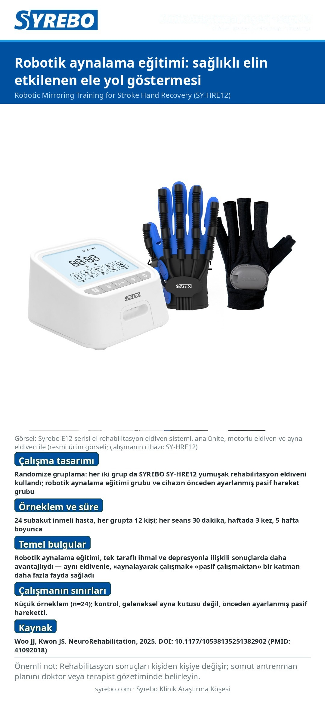

Sayı 03 · Poster sürümü
Robotik aynalama eğitimi: sağlıklı elin etkilenen ele yol göstermesi

Kaynak: Woo JJ, Kwon JS. Effects of Robotic Mirroring Training and Mirror Therapy with Robot on Unilateral Neglect, Depression, and Activities of Daily Living Among Patients with Subacute Stroke. NeuroRehabilitation, 2025. DOI:
10.1177/10538135251382902 (PMID:
41092018).
Çalışmanın sınırları: Küçük örneklem (n=24); kontrol, geleneksel ayna kutusu değil, önceden ayarlanmış pasif hareketti.
Not: Rehabilitasyon sonuçları kişiden kişiye değişir; lütfen doktorunuzun veya terapistinizin belirlediği antrenman planını uygulayın.
Çince tam metni okuyunRead in English